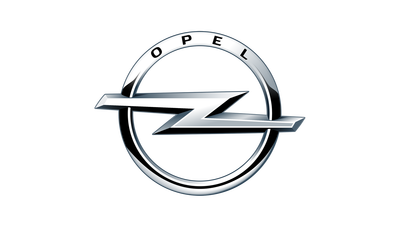

Opel

Adam Opel AG is a German automobile manufacturer, subsidiary of the French automotive company Groupe PSA since March 2017 after being bought by General Motors in 1929. Opel's headquarters are based in Rüsselsheim, Hesse, Germany. The company designs, engineers, manufactures, and distributes Opel-branded passenger vehicles, light commercial vehicles, and vehicle parts for distribution in Africa, Asia, Europe, and South America. Opel designed and manufactured vehicles are also sold under the Buick brand in the United States, Canada, Mexico, and China, the Holden brand in Australia and New Zealand, and the Vauxhall brand in Great Britain.
Opel traces its roots to a sewing machine manufacturer founded by Adam Opel in 1862. The company began manufacturing bicycles in 1886 and produced its first automobile in 1899.
Opel became a share-limited company (German: Aktiengesellschaft) in 1929; General Motors took a majority stake in Opel that same year. General Motors assumed full control in 1931, and today Adam Opel AG is a wholly owned subsidiary of General Motors Company. Although Adam Opel AG continues to be a share-limited company, shares of the company are not publicly listed. Adam Opel AG is the parent company of General Motors UK Limited, better known as Vauxhall, and various other General Motors subsidiaries.
During the 1970s and 1980s, the Opel and Vauxhall ranges were rationalised into one consistent range across Europe.
Opel withdrew from China, where it had a network of 22 dealers, in early 2015 after General Motors decided to withdraw its Chevrolet brand from Europe starting in 2016.
Company
Opel operates 10 vehicle, powertrain, and component plants and four development and test centers in six countries, and employs around 35,000 people in Europe. The brand sells vehicles in more than 50 markets worldwide. Other plants are in Eisenach and Kaiserslautern, Germany; Szentgotthárd, Hungary; Zaragoza, Spain; Gliwice, and Tychy, Poland; Saint Petersburg, Russia; Ellesmere Port, and Luton, UK. The Dudenhofen Test Center is located near the company's headquarters and is responsible for all technical testing and vehicle validations.
Around 6,250 people are responsible for the engineering and design of Opel/Vauxhall vehicles at the International Technical Development Center and European Design Center in Rüsselsheim. All in all, Opel plays an important role in the global GM corporate group. The company was responsible for primary engineering of the Epsilon (I) platform, Epsilon II platform, Delta (I) platform, Delta (II) platform, and Gamma platform, and played an important role in the development of especially the higher-end, more-refined version of the Gamma II platform. General Motors' new global platform D2xx is being mainly engineered by Opel, as well.
Opel is in most cases fully responsible for the car architectures and technologies up to the Opel Insignia/Buick Regal. In particular, many of the future-oriented, modern, fuel-efficient GM architectures for compact vehicles are developed by Opel.
Even the idea and concept behind the Ampera was rooted in Opel with Frank Weber, the former Global Vehicle Line Executive and Global Chief Engineer electric vehicle development, being originally an Opel employee who was moved to the United States to advance the development of this concept in GM's home country instead of the German outpost that is Opel. In 2009, Weber returned during the reorganization of the Opel leadership to Adam Opel GmbH as Vice President Planning and Commercial Vehicle Operations for the company. In 2011, Frank Weber left Opel for BMW.
Opel established the Opel Performance Center in 1997, which is responsible for the development of high-performance cars such as the Astra OPC, Corsa OPC, and Insignia OPC. The OPC name is also used in some motorsport activities.
Opel Special Vehicles (OSV) is a wholly owned subsidiary that offers public authority and special-purpose vehicles. OSV developed in cooperation with the International Technical Development Center the Opel Zafira B 1.6 CNG (compressed natural gas).
Opel Group GmbH is responsible for the operation of General Motors businesses in Europe.
World presence
Opel is the main brand of General Motors in Europe. As of 2014, the Opel brand was present in the most of Europe, in parts of North Africa, in South Africa, the Middle East, in Chile and in Singapore. Their models have been rebadged and sold in other countries and continents, such as Vauxhall in the United Kingdom, Chevrolet in Latin America, Holden in Australia and New Zealand, and previously, Saturn in the United States and Canada. Following the demise of General Motors Corporation's Saturn division in North America, Opel cars are currently rebadged and sold in the United States, Canada, Mexico, and China under the Buick name with models such as the Opel Insignia/Buick Regal, Opel Astra sedan/Buick Verano(both which share underpinnings with the Chevrolet Cruze), and Opel Mokka/Buick Encore.